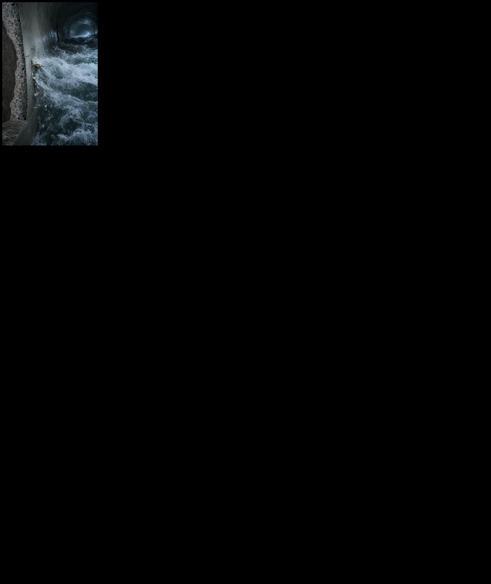

CREATOR ASSET PACK
Impossible Engineering — Structures Vol. 1
Original engineering reconstruction stills and motion clips from Load Path.
80 stills20 motion clips10 stories
Original reconstruction stills and motion source clips created for Load Path. Built for documentary editors, educators, YouTube creators, presentations, and editorial projects.

Original engineering reconstruction stills and motion clips from Load Path.
A small commercial-use sampler from the Load Path engineering visual library.